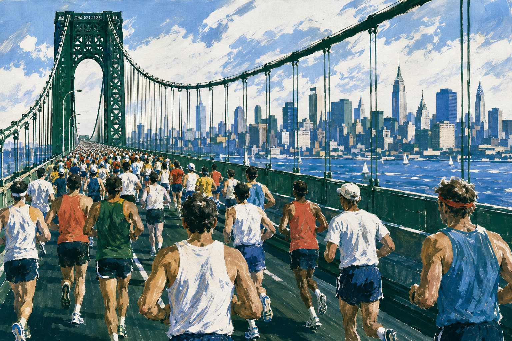

NEW YORK CITY42.195
01 · Staten Island
490 f.Kr.?
Först fanns bara berättelsen
Namnet kommer från legenden om en budbärare mellan Marathon och Aten. Om han verkligen sprang är osäkert. Distansen 42 195 meter fanns inte.
New York Marathon1 november 2026

Andreas Almgren ska springa sitt första maraton. Kan han slå New Yorks banrekord? För att förstå vad det kräver följer vi honom genom 42 195 meter.
”Jag tänker att jag hänger på ledarna och spurtar för att vinna.” SVT, augusti 2026
AI-genererad affischillustration. Fri tolkning av staden, inte en exakt banvy.
01 · Staten Island
490 f.Kr.?
Namnet kommer från legenden om en budbärare mellan Marathon och Aten. Om han verkligen sprang är osäkert. Distansen 42 195 meter fanns inte.
02 · Queens
1896 → 1908
Det första olympiska maratonloppet var ungefär 40 kilometer. Londonloppet blev längre. Den sträckan blev sedan standard: 42 195 meter.
03 · Bronx
New York 1970 → 1976
Först sprang löparna fyra varv i Central Park. Sex år senare flyttade loppet ut genom alla fem stadsdelar. Det är den vägen Almgren ska ta.
04 · Central Park
New York 2026
Efter fem broar och 42,195 kilometer återstår bara målrakan. Klockan avgör vad hans banfart räcker till.
Tiderna
När 56 381 registrerade löpartider läggs på samma linje syns hur långt ut i kanten två timmar egentligen ligger.
01 · Hela fältet
Av urvalets 56 381 löpartider visas 56 036 i kurvan. De övriga kom i mål efter åtta timmar.
02 · Mitten
Drygt var tionde sluttid i urvalet finns i det intervallet. Medeltiden för hela loppet var 4:32:25.
03 · Under tre
2 396 löpare i urvalet tog sig under tre timmar. Nu är den stora delen av fältet utanför bilden.
04 · Elitkanten
Tamirat Tolas 2:04:58 är nästan två och en halv timme snabbare än loppets medeltid.
Farten
Det här är ett tankeexperiment med jämn snittfart. Alla startar samtidigt. Två löpare siktar på sex respektive fyra timmar. De andra håller New Yorks rekordtempo och Almgrens halvmaratontempo.
Alla står på startlinjen.
01 · Samma start
Alla lämnar samma startlinje. Se hur snabbt avståndet växer mellan motionsfart och elitfart.
02 · Första varvet
När Almgren avslutar sitt första varv har sextimmarslöparen bara hunnit ungefär en tredjedel av banan.
03 · Almgren passerar
Drygt två minuter efter starten är Almgren redan ett helt varv före. Men här håller han sin halvmaratonfart. Hur mycket kan han behålla över dubbla distansen?
04 · Rekordtempot passerar
Strax därpå blir fyratimmarslöparen varvad igen, nu av New Yorks rekordtempo. Den farten måste hålla hela vägen till Central Park.
*58:41 är Almgrens halvmaratontid. Farten är ingen prognos för hans maraton.
Kroppen
Ett snabbt maraton kräver att varje del av systemet fungerar, och att systemet fortfarande fungerar efter tre mil.
Hälsenan överför kraft från vadmusklerna till hälen och kan återföra lagrad energi.
01 · Mekaniken
När foten tar emot kroppsvikten belastas muskler och senor. Hälsenan kan lagra elastisk energi och återföra en del i frånskjutet, ungefär som en fjäder. Musklerna behöver fortfarande arbeta i varje steg.
↳ Senan hjälper till!
02 · Syret
VO₂max beskriver hur mycket syre kroppen kan ta upp och använda. Lungor, hjärta, blod och muskler måste arbeta som ett sammanhängande transportsystem.
03 · Ekonomin
Båda springer i 18 km/h. Den som behöver mindre syre per kilo kroppsvikt vid samma fart har bättre löpekonomi. Det beror på flera saker, bland annat samspelet mellan muskler, senor och rörelse. Det finns ingen enda perfekt löpstil.
04 · Uthålligheten
Maraton avgörs inte bara av toppvärden. Det avgörs av hur lite syreupptag, ekonomi och mekanik försämras när kroppen har arbetat länge.
Obs! Vad finns kvar efter tre mil?
Träningen
Farten har Almgren redan visat. Träningen ska hjälpa honom att hålla den längre. I dagboken återkommer lugna kilometer och kontrollerade tröskelpass. Inför maraton blir långpassen allt viktigare.
Sierra Nevada · beskriven februari 2026
fm Lugn distans
em Lugn distans
fm Tröskel
em Tröskel
fm Lugn distans
em Lugn distans
fm Tröskel
em Tröskel
10–12 km lugnt
+ styrkaBackar / halvmaratonpass
+ ett lugnt pass25–30 km
+ styrkaAlla pass räknas.
Även lugna pass
räknas i mängden.
Grundträning inför 10 km, inte New York-veckan.
Källa: Almgren i Athletics Weekly, februari 2026 ↗
Almgren · grundperiod · februari 2026
≈200 km
En stor vecka består också av många lugna kilometer.
Ur Almgrens intervju i Athletics Weekly ↗Omkring 200 kilometer motsvarar nästan fem maraton på en vecka.
01 · Grundveckan
Almgren beskriver omkring 200 kilometer per vecka under en grundperiod på höjd. Tröskeldagarna återkommer, men mellan dem ligger lugn löpning. Det här är basen inför 10-kilometerssäsongen.
02 · Dubbeltröskeln
Två kontrollerade tröskelpass samma dag, med flera timmars paus. Intervallerna hålls nära eller strax under den övre laktattröskeln. Syftet är att samla mycket arbete utan att ett enda pass blir för långt och slitsamt. Mat, vila och lugnare dagar hjälper honom att klara den samlade belastningen.
03 · Passkontrollen
Almgren följer fart, puls, laktat och känsla. Tiderna i boken kommer från ett hårt pass inför Valencia, inte från en vanlig tröskeldag. Laktat hjälper honom att styra intensiteten under passet. Återhämtningen behöver också bedömas utifrån trötthet, sömn och hur kroppen svarar över tid.
04 · Mot New York
I augusti beskrev Almgren det här 35-kilometerspasset, med fart på slutet. Han övar också på att få i sig kolhydrater under löpningen: musklerna behöver bränsle och magen behöver tåla påfyllningen.
Planerat nästa steg: upp mot 40 kilometer, progressivt. Det var ännu en plan i intervjun.